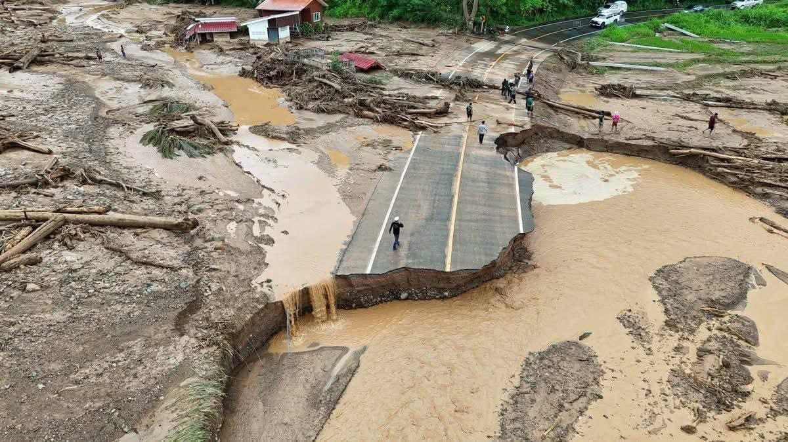
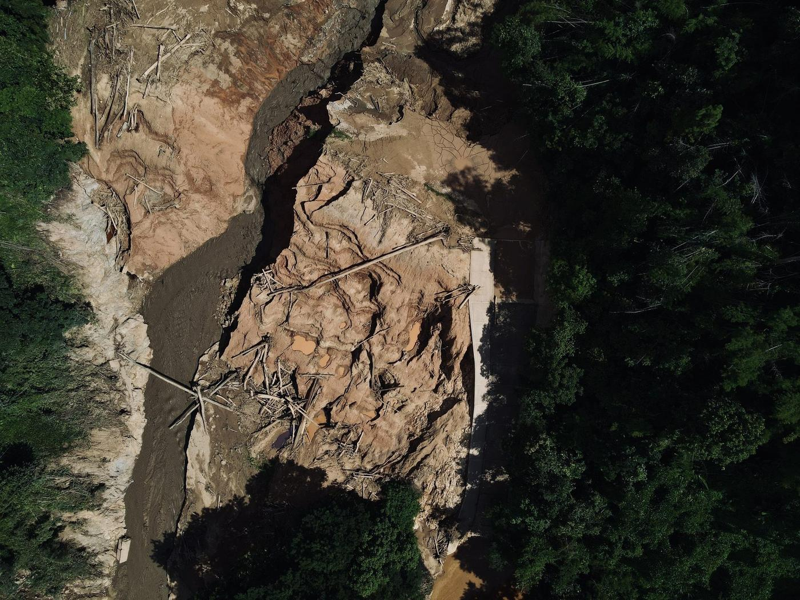
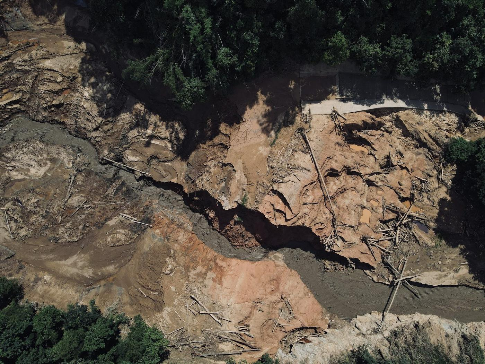
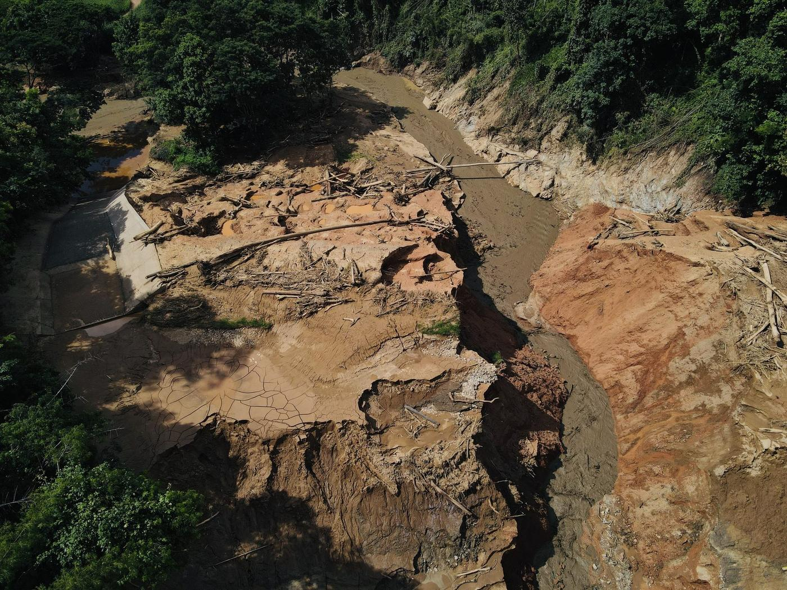
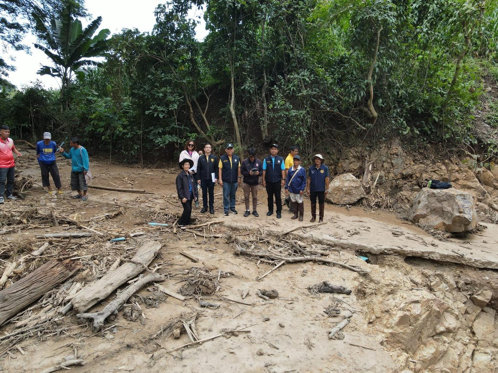
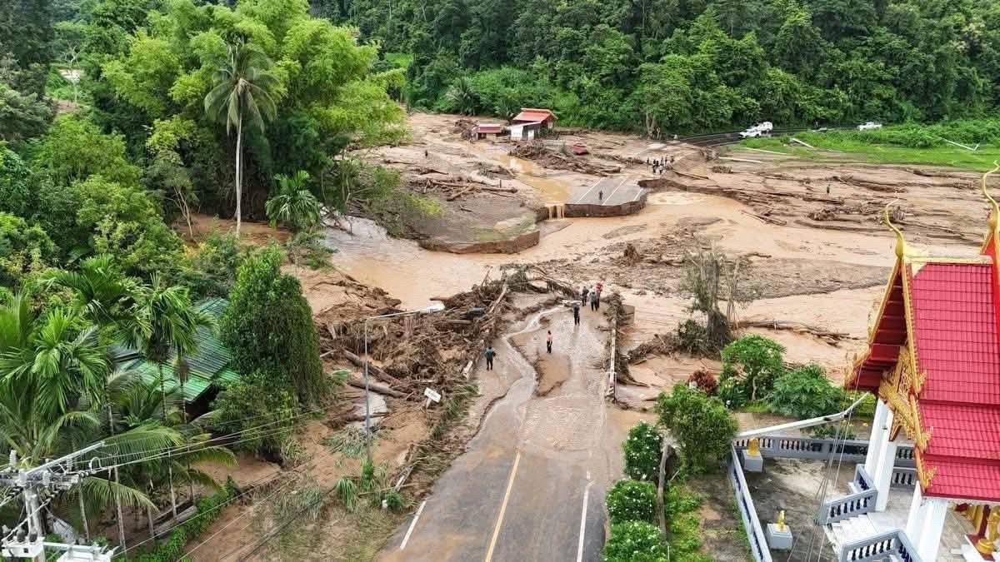
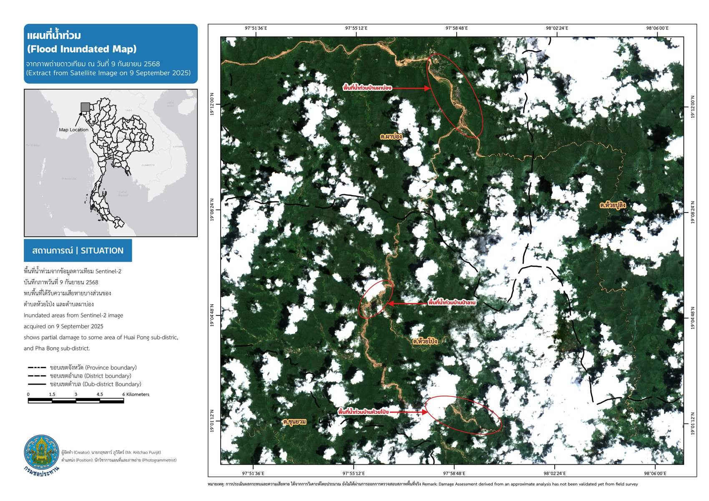
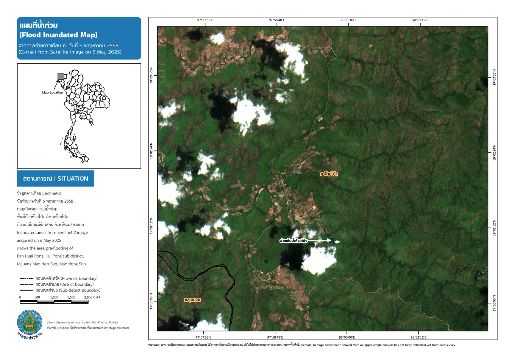
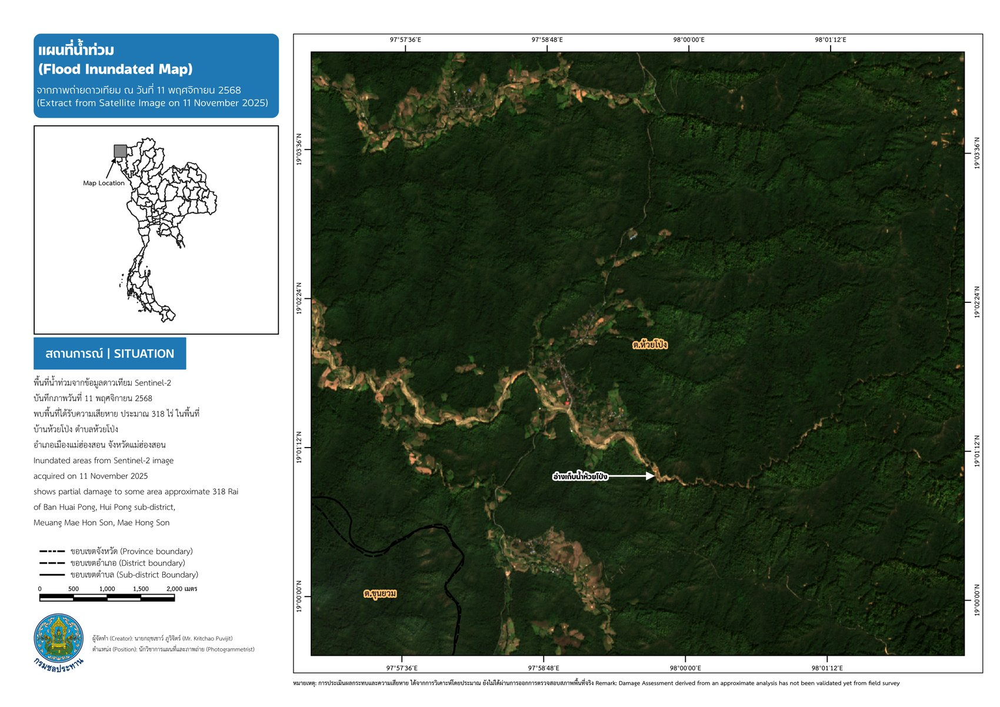
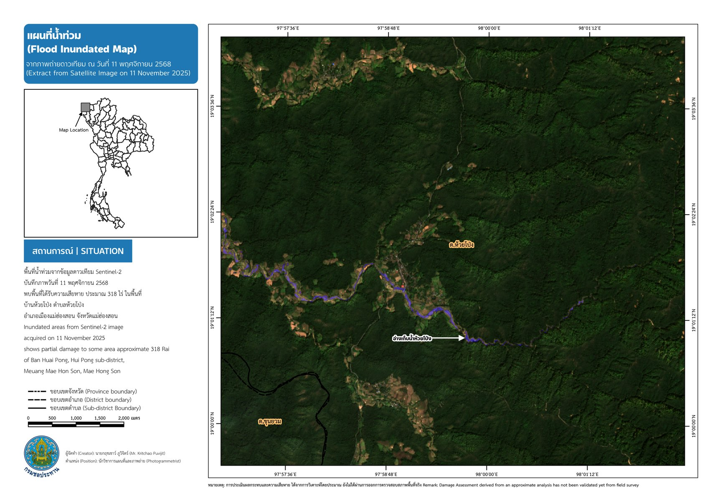

โจทย์และที่มา
พายุทาจิกิพัดผ่านและทำให้เกิดฝนตกหนักสะสมในพื้นที่จังหวัดแม่ฮ่องสอน ส่งผลให้อ่างเก็บน้ำห้วยโป่ง ตำบลห้วยโป่ง อำเภอเมืองแม่ฮ่องสอน ได้รับความเสียหาย และสะพานข้ามลำห้วยโป่งบนทางหลวงหมายเลข 108 ถูกกระแสน้ำกัดเซาะจนขาด ตัดเส้นทางสัญจรหลักที่เชื่อมพื้นที่
เนื่องจากพื้นที่ประสบภัยเข้าถึงยากในช่วงวิกฤต จึงใช้ภาพถ่ายดาวเทียม Sentinel-2 เปรียบเทียบสภาพพื้นที่ก่อนและหลังเหตุการณ์ เพื่อประเมินขอบเขตความเสียหายเบื้องต้นอย่างรวดเร็ว สนับสนุนการรายงานสถานการณ์ให้หน่วยงานที่เกี่ยวข้องทราบ ก่อนออกตรวจสอบพื้นที่จริง
ไทม์ไลน์เหตุการณ์
วิธีการดำเนินงาน
- รวบรวมภาพถ่ายดาวเทียม Sentinel-2 ช่วงก่อนเหตุการณ์ (6 พ.ค. 2568) และหลังเหตุการณ์ (11 พ.ย. 2568)
- ประมวลผลภาพแบบ True Color Composite (TCI) และ False Color Composite (FCI) เพื่อเปรียบเทียบสภาพพื้นที่
- วิเคราะห์ change detection แบบ multi-temporal เพื่อจำแนกพื้นที่ดินเปิดโล่ง/พื้นที่เมือง (สีชมพูใน FCI) พืชพรรณ (สีเขียว) และแหล่งน้ำ (สีม่วง/น้ำเงิน)
- จัดทำแผนที่สรุปสถานการณ์น้ำท่วม (Flood Inundated Map) พร้อมพิกัดอ้างอิงและสัญลักษณ์มาตรฐานตามรูปแบบของกรมชลประทาน
ภาพเหตุการณ์จริงจากพื้นที่ (ภาพถ่ายโดรน/ภาคสนาม)






ภาพประกอบผลงาน (แผนที่วิเคราะห์)





ผลลัพธ์และการนำไปใช้
แผนที่ที่จัดทำขึ้นช่วยให้หน่วยงานทราบขอบเขตความเสียหายโดยประมาณ (~318 ไร่ บริเวณบ้านห้วยโป่ง) ได้อย่างรวดเร็วกว่าการรอสำรวจภาคสนามเพียงอย่างเดียว โดยเฉพาะในช่วงที่เส้นทางเข้าพื้นที่ถูกตัดขาดจากสะพาน ทล.108 ที่ชำรุด ใช้เป็นข้อมูลเบื้องต้นประกอบการวางแผนให้ความช่วยเหลือและซ่อมแซมโครงสร้างต่อไป